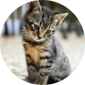
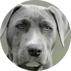
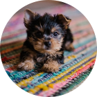
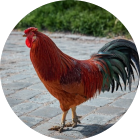

Consultas de Rotina — Acompanhamento preventivo e atencioso para garantir uma vida longa e ativa para o seu pet.
Na VetCare, unimos medicina veterinária de ponta com o carinho e a paciência que o seu pet merece. O cuidado que você busca, com o amor que eles precisam.
AGENDE UMA CONSULTA
Consultas de Rotina — Acompanhamento preventivo e atencioso para garantir uma vida longa e ativa para o seu pet.

Vacinação em Dia — Proteção essencial com as melhores vacinas importadas para manter as doenças bem longe.

Exames Rápidos — Laboratório próprio e moderno para diagnósticos precisos e resultados sem demora.

Consulta para animais exóticos — aqui, todos os animais são bem-vindos e bem cuidados.